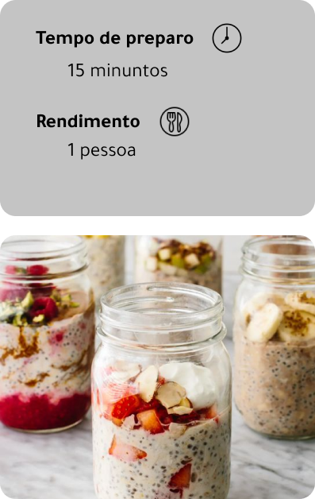

Ingredientes
- 3 colheres de sopa de aveia em flocos grossos
- 1/4 xícara de leite
- 1 colher de sopa de semente de chia
- Frutas frescas como morango, banana...
- Raspas de laranja (opcional)
- Nozes (opcional)
- Mel à gosto
Modo de preparo
- Em um pote de vidro hermético coloque a aveia, a semente de chia e a raspa de laranja;
- Adicione o leite na quantidade suficiente para cobrir os ingredientes secos colocando um pouco mais porque a chia vai inchar aumentando muito de volume depois de hidratada;
- Deixe espaço suficiente para que os ingredientes se acomodem depois de hidratados, e deixe espaço para adicionar as frutas frescas;
- Tampe o vidro e coloque na geladeira para consumir no dia seguinte. O tempo de refrigeração pode ser de 6 a 8 horas para que o resultado seja perfeito;
- No outro dia você terá um creme gostoso que pode ser comido direto no vidro. Acrescente frutas frescas picadas com o mel e já está pronto.
